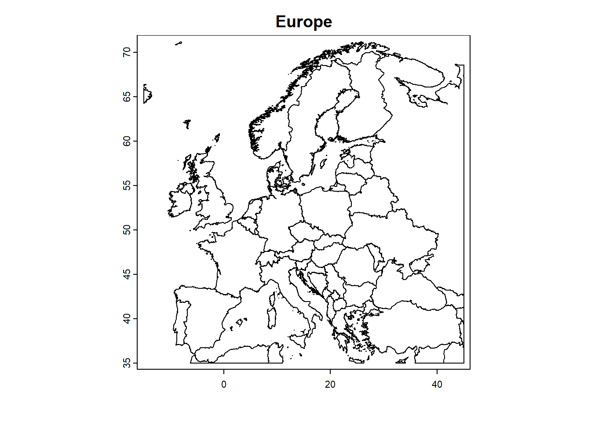
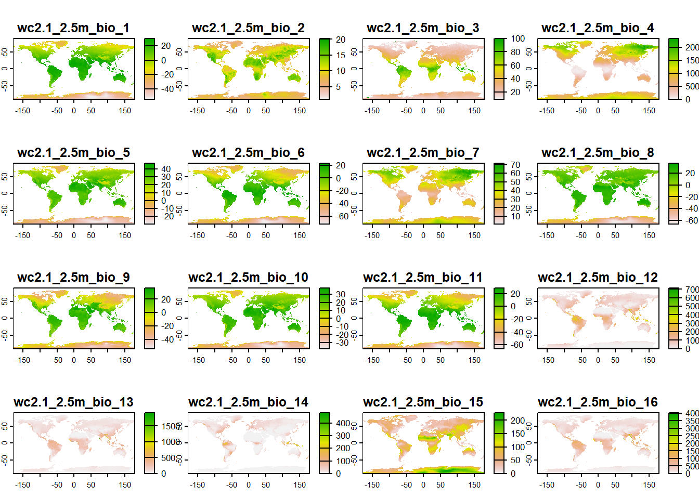
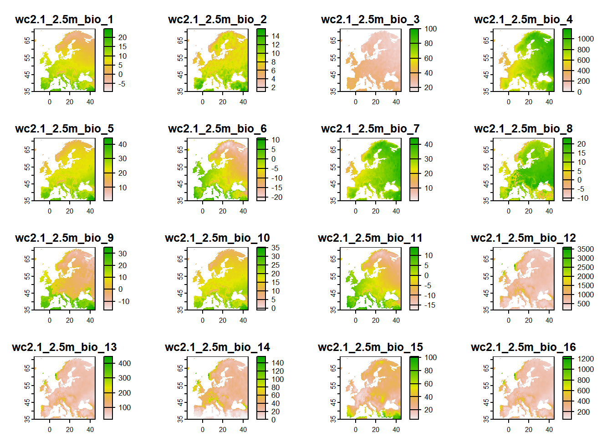
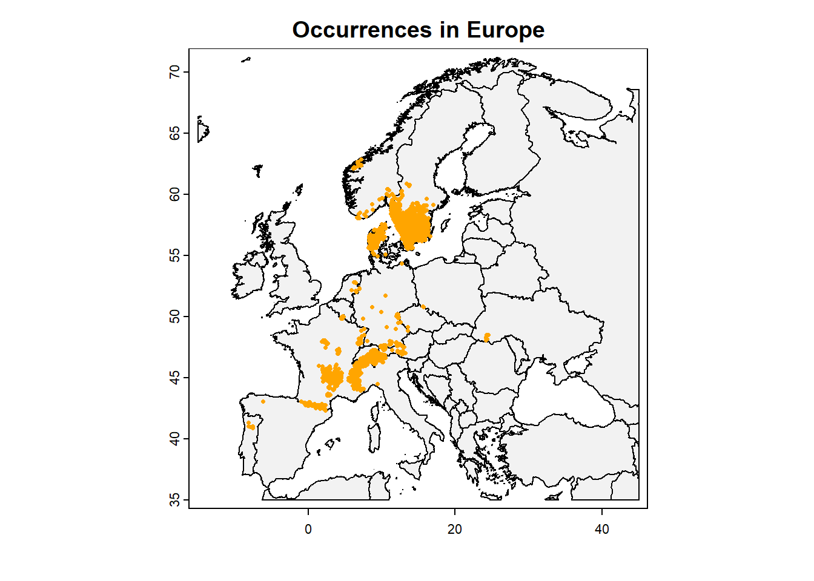
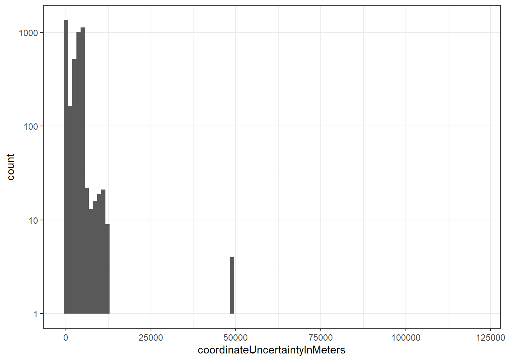
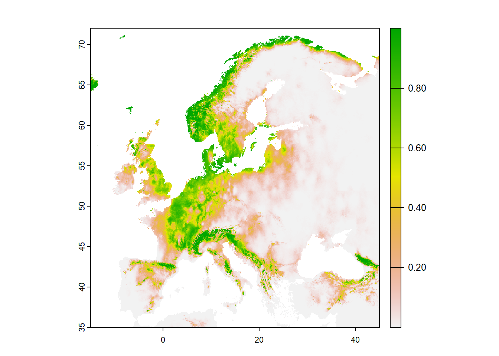
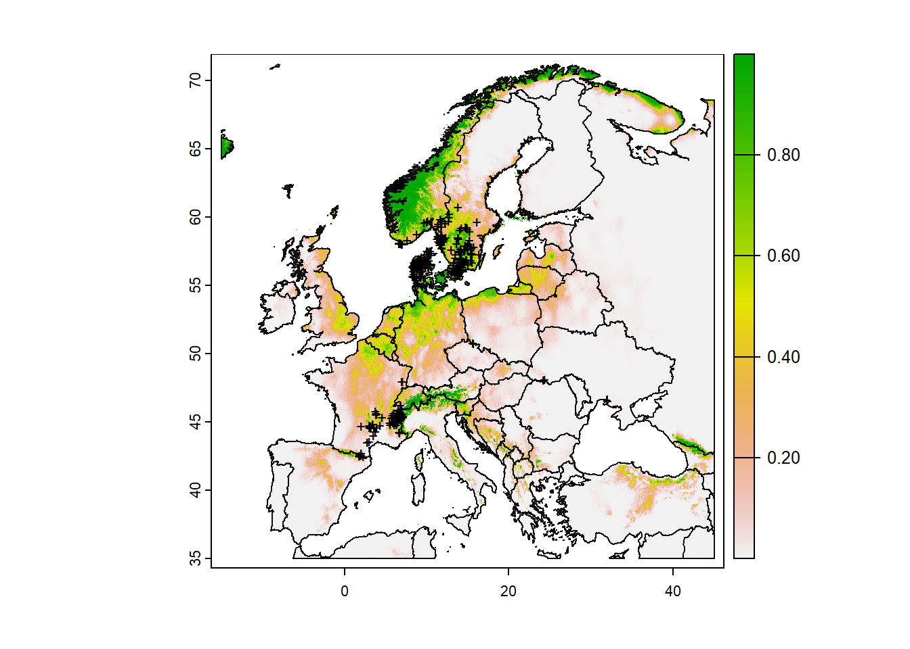
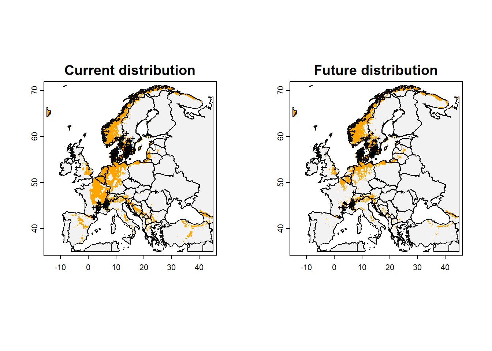
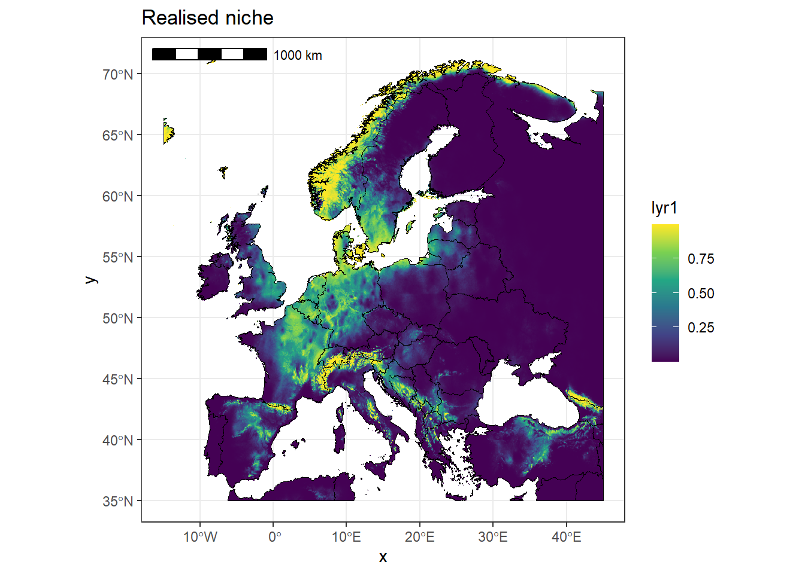

dir.create(path = "data")
dir.create(path = "results")Species distribution modelling in R
Aim
In this session we want to learn how to build a correlative species distribution model (sdm) in R for a single species. We want to predict the current (potential) distribution of a species and in a next step its potential distribution under changed climatic conditions.
In this example, we want to predict the potential distribution of the herbaceous plant species Arnica montana in Europe now and under climate change. As a model we will use a simple generalised linear model (glm).
Arnica montana
The herbaceous plant species Arnica montana (family Asteraceae) is native to Europe and known for its medicinal application. If you want You can find additional information about the species on, for example, Plants of the World Online, Arnica montana. In the picture below you can see Arnica montana flowering in yellow.

Basic steps
To build a simple correlative SDM we will take the following four steps:
Obtain data on
- occurrences (presences) and absences of a species
- environmental variables (relevant for the species)
and link species’ and environmental information.
Build model explaining the distribution of a species.
Predict (current and past) potential distribution based on model.
Set up work environment
There are two ways to set up your work environment. Choose the one you are most comfortable with.
- Option 1: Set working directory with the function `
setwd("./YOUR_PATH")`. - Option 2: Create R project (button at top right in RStudio).
To organise your data it is helpful to create folders for your underlying data and the results of your analysis. Which you can do with the following code snippets:
Packages
We need to load a few packages that contain functions that we need to download the necessary data, build our SDM and predict our species’ distribution.
library(terra) # handling of spatial data
library(tidyverse) # data handling and visualization
library(rgbif) # obtain species distribution data
library(geodata) # obtain environmental data
library(knitr) # ease reporting
library(predicts) # make spatial predictions
library(ggspatial) # visualize spatial data
Tip
There are many ways and many packages you can use to build a SDM. In this class you will learn how a SDM works in principle but you can be as creative as you want to build your own SDM by using different data sources, packages and functions or even building your own functions.
Spatial extent
Before we start downloading our data we need to define an area of interest. In this example let’s use Europe.
# get the extent of Europe
Europe_ext <- c(-15,45,35,72)
# get map of Europe
Europe_map <- crop(x = world(resolution = 2,
level = 0,
path = "data/"),
y = Europe_ext)Always check your data, for example by plotting it.
plot(Europe_map, main = "Europe")
Step 1: Obtain data on species’ presences and absences and environmental variables
Environmental data
We need to obtain environmental data that drive the distribution of Arnica montana in Europe. In this example we will based our SDM on climate data.
Our source for climate data is WorldClim, which you can access via the `geodata` package. Be ware that the bioclimatic data from WorldClim is available at different spatial resolutions (10, 5, 2.5 and 0.5 minutes of a degree).
Resolution of WorldClim bioclimatic variables.
Here you get a visual impression of the different resolutions at which WorldClim bioclimatic variables are available. The higher the resolution the longer it takes to download and process the data.

The 19 WordClim bioclimatic variables represent averaged climate data for 1970-2000 and contain the following information:
- BIO1 = Annual Mean Temperature
- BIO2 = Mean Diurnal Range (Mean of monthly (max temp - min temp))
- BIO3 = Isothermality (BIO2/BIO7) (×100)
- BIO4 = Temperature Seasonality (standard deviation ×100)
- BIO5 = Max Temperature of Warmest Month
- BIO6 = Min Temperature of Coldest Month
- BIO7 = Temperature Annual Range (BIO5-BIO6)
- BIO8 = Mean Temperature of Wettest Quarter
- BIO9 = Mean Temperature of Driest Quarter
- BIO10 = Mean Temperature of Warmest Quarter
- BIO11 = Mean Temperature of Coldest Quarter
- BIO12 = Annual Precipitation
- BIO13 = Precipitation of Wettest Month
- BIO14 = Precipitation of Driest Month
- BIO15 = Precipitation Seasonality (Coefficient of Variation)
- BIO16 = Precipitation of Wettest Quarter
- BIO17 = Precipitation of Driest Quarter
- BIO18 = Precipitation of Warmest Quarter
- BIO19 = Precipitation of Coldest Quarter
# download bioclomatic variables
bioclim_data <- worldclim_global(var = "bio",
res = 2.5,
path = "./data/")
# plot data for first visual impression
plot(bioclim_data)
# reduce to the extent of Europe as our study area
bioclim_data <- crop(bioclim_data, Europe_ext)
# check if cropping worked
plot(bioclim_data)
Species occurrence data
Our sample species will be the Arnica montana. Distribution data will be obtained from Global Biodiversity Information Facility (gbif). Using the function `occ_data` from the `rgbid` package you need to be aware that the function is limited to a maximum download of 100,000 occurrence records.
# download data from gbif
gbif_ArnMon_download <- occ_data(scientificName = "Arnica montana",
hasCoordinate = TRUE,
limit = 10000,
year="1999,2005",
# country = "DE",
basisOfRecord = "HUMAN_OBSERVATION")
# extract data
gbif_ArnMon <- gbif_ArnMon_download$data
# check your data table
head(gbif_ArnMon)# A tibble: 6 × 145
key scientificName decimalLatitude decimalLongitude issues datasetKey
<chr> <chr> <dbl> <dbl> <chr> <chr>
1 1112155616 Arnica montana … 47.8 6.81 cdc,g… 75956ee6-…
2 1112155654 Arnica montana … 47.8 6.81 cdc,g… 75956ee6-…
3 1112155658 Arnica montana … 47.8 6.81 cdc,g… 75956ee6-…
4 1102848655 Arnica montana … 45.3 6.13 cdc,g… 75956ee6-…
5 1102848651 Arnica montana … 45.3 6.13 cdc,g… 75956ee6-…
6 1102848698 Arnica montana … 45.3 6.13 cdc,g… 75956ee6-…
# ℹ 139 more variables: publishingOrgKey <chr>, installationKey <chr>,
# hostingOrganizationKey <chr>, publishingCountry <chr>, protocol <chr>,
# lastCrawled <chr>, lastParsed <chr>, crawlId <int>, basisOfRecord <chr>,
# occurrenceStatus <chr>, taxonKey <int>, kingdomKey <int>, phylumKey <int>,
# classKey <int>, orderKey <int>, familyKey <int>, genusKey <int>,
# speciesKey <int>, acceptedTaxonKey <int>, acceptedScientificName <chr>,
# kingdom <chr>, phylum <chr>, order <chr>, family <chr>, genus <chr>, …# select only the columns you need for reasons of simplicity
gbif_ArnMon <- gbif_ArnMon[,c("key",
"decimalLatitude",
"decimalLongitude",
"occurrenceStatus",
"coordinateUncertaintyInMeters")]
# check your data by looking at the summary and plotting it
summary(gbif_ArnMon) key decimalLatitude decimalLongitude occurrenceStatus
Length:10000 Min. :40.88 Min. :-8.171 Length:10000
Class :character 1st Qu.:46.56 1st Qu.: 7.024 Class :character
Mode :character Median :56.61 Median :12.614 Mode :character
Mean :52.94 Mean :10.805
3rd Qu.:57.65 3rd Qu.:14.388
Max. :62.84 Max. :24.500
coordinateUncertaintyInMeters
Min. : 1
1st Qu.: 100
Median : 3535
Mean : 2906
3rd Qu.: 5000
Max. :121129
NA's :5733 # plot the base map
plot(Europe_map,
axes = TRUE,
col = "grey95",
main = "Occurrences in Europe")
# add points for individual observations
points(x = gbif_ArnMon$decimalLongitude,
y = gbif_ArnMon$decimalLatitude,
col = "orange",
pch = 16,
cex = 0.5)
Data quality check
Species distribution data from gbif needs to undergo quality control as the input data is based on a multitude of different sources. By downloading only data that has coordinates and is based on human observations we already filtered the occurrence records. The following steps can furthermore be implemented to analyse and enhance data quality.
# diplay uncertainty of occurrence records (in meters)
ggplot(gbif_ArnMon, aes(x = coordinateUncertaintyInMeters)) +
geom_histogram(bins = 1e2) +
theme_bw() +
scale_y_continuous(trans = "log10")Warning: Removed 5733 rows containing non-finite outside the scale range
(`stat_bin()`).Warning in scale_y_continuous(trans = "log10"): log-10 transformation
introduced infinite values.Warning: Removed 82 rows containing missing values or values outside the scale range
(`geom_bar()`).
# reduce occurrence records with more than 100 meters uncertainty
gbif_ArnMon <- gbif_ArnMon[which(gbif_ArnMon$coordinateUncertaintyInMeters < 100), ]Pseudo-absences
For a simple correlative SDM we already have presence data of Arnica montana but we are missing absences. As we cannot obtain true absences of Arnica montana all over Europe we will create pseudo-absences, which are essentially randomly drawn points across our study area. It is advisable to choose roughly the same number of pseudo-absences and presences.
# randomly sample points
background <- spatSample(x = bioclim_data,
size = nrow(gbif_ArnMon), # same number as our observed points
values = FALSE, # no need for values
na.rm = TRUE, # no sample from NA cells
xy = TRUE) # obtain coordinates
# check background data in table and visually
head(background) x y
[1,] 43.979167 65.81250
[2,] -2.895833 48.27083
[3,] 16.979167 59.68750
[4,] 5.229167 35.81250
[5,] 37.354167 39.31250
[6,] 32.937500 37.02083# plot occurrences and pseudo-absences on our Europe map
plot(Europe_map,
axes = TRUE,
col = "grey95",
main = "Presences and absences in Europe")
# add the background points
points(background,
col = "darkgrey",
pch = 1,
cex = 0.75)
# add the points for individual observations
points(x = gbif_ArnMon$decimalLongitude,
y = gbif_ArnMon$decimalLatitude,
col = "orange",
pch = 16,
cex = 0.5)
Join pseudo-absences into one dataset with presences. We will mark presences with “1” and pseudo-absences with “0”.
# get coordinates of presences
ArnMon_presences <- gbif_ArnMon[, c("decimalLongitude", "decimalLatitude")]
colnames(ArnMon_presences) <- c("longitude", "latitude")
# Add column indicating presence
ArnMon_presences$pa <- 1
# Convert background data to a data frame
ArnMon_absences <- as.data.frame(background)
colnames(ArnMon_absences) <- c("longitude", "latitude")
# Add column indicating absence
ArnMon_absences$pa <- 0
ArnMon_PA <- rbind(ArnMon_presences, ArnMon_absences)Add environmental data to the dataframe with presences and pseudo-absences of Arnica montana.
# extract environmental information for sample points
bioclim_df <- terra::extract(x = bioclim_data,
y = ArnMon_PA[, c("longitude", "latitude")],
ID = FALSE)
# join environmental and species' data into one data frame
ArnMon_complete_df <- cbind(ArnMon_PA, bioclim_df)Training and test data
In the following we will split our dataset into two parts. We will use 80% of the data for model training and set aside 20% of the data for testing.
# create 5 folds
ArnMon_folds <- folds(x = ArnMon_complete_df,
k = 5,
by = ArnMon_complete_df$pa)
# check the number of samples per fold
table(ArnMon_folds)ArnMon_folds
1 2 3 4 5
368 366 368 366 368 Now we define which set of points will be training and testing data. Lets make folds 1 to 4 training data and fold 5 testing data.
testing_points <- ArnMon_complete_df[ArnMon_folds == 5, ]
training_points <- ArnMon_complete_df[ArnMon_folds != 5, ]Step 2: Model building
Build generalized linear model (GLM)
The GLM uses the presences and pseudo-absences as the response variable and uses the bioclimatic variables as predictors. As the presences and pseudo-absences only consist of zeros and ones we use the family “binomial”.
# build GLM
glm_ArnMon <- glm(pa ~ .,
data = training_points[,-c(1,2)],
family = binomial())Step 3: Predict potential distribution
Prediction based on GLM
# spatial prediction of GLM into space
predict_ArnMon <- predict(bioclim_data, glm_ArnMon, type = "response")
# plot data to check the outcome
plot(predict_ArnMon)
Model evaluation
# Use testing data for model evaluation
glm_eval <- pa_evaluate(p = testing_points[testing_points$pa == 1, ],
a = testing_points[testing_points$pa == 0, ],
model = glm_ArnMon,
type = "response")
# print evaluation measures
glm_eval@stats
np na prevalence auc cor pcor ODP
1 184 184 0.5 0.935 0.803 0 0.5
@thresholds
max_kappa max_spec_sens no_omission equal_prevalence equal_sens_spec
1 0.45 0.45 0.213 0.516 0.629
@tr_stats
treshold kappa CCR TPR TNR FPR FNR PPP NPP MCR OR
1 0 0 0.5 1 0 1 0 0.5 NaN 0.5 NaN
2 0 0 0.5 1 0 1 0 0.5 NaN 0.5 NaN
3 0 0 0.5 1 0 1 0 0.5 NaN 0.5 NaN
4 ... ... ... ... ... ... ... ... ... ... ...
296 1 0.01 0.5 0.01 1 0 0.99 1 0.5 0.5 Inf
297 1 0 0.5 0 1 0 1 NaN 0.5 0.5 NaN
298 1 0 0.5 0 1 0 1 NaN 0.5 0.5 NaNForecast
We take the GLM build before to predict the distribution of Arnica montana in 2061-2080 by exchaning the exchanging the bioclimatic variables representing current climatic conditions by data based on climate models. We stick to a resolution of 2.5 degrees if a minute.
# download predicted climate data
forecast_data <- cmip6_world(model = "MPI-ESM1-2-HR",
ssp = "245",
time = "2061-2080",
var = "bioc",
res = 2.5,
path = "data")
# use the same names from bioclim_data also for the forecasted climate data
names(forecast_data) <- names(bioclim_data)
# crop forecast data to European extent
forecast_data <- crop(x = forecast_data, y = Europe_ext)
# predict presence from model with forecasted climate data
forecast_presence <- predict(forecast_data, glm_ArnMon, type = "response")
# like always plot the results to check the outcome
plot(Europe_map,
axes = TRUE,
col = "grey95")
# add model probabilities
plot(forecast_presence, add = TRUE)
# redraw those country borders
plot(Europe_map, add = TRUE, border = "grey5")
# add original observations
points(x = ArnMon_presences$longitude,
y = ArnMon_presences$latitude,
col = "black",
pch = "+",
cex = 0.75)
Binary predictions
The predicted occurrences for Arnica montana are based on occurrence probabilities ranging between 0 and 1. To communicate our outcome is can help to translate the occurrence probability map into a binary map where we define a cell to be suitable for a species (1) or not (0). To obtain such a map we need to define a threshold that divides those two categories.
# use evaluation metrics to define threshold for map of binary predictions
glm_threshold <- glm_eval@thresholds$max_spec_sens
# these are the cells that we defined as potential distribution
predict_ArnMon > glm_thresholdclass : SpatRaster
dimensions : 888, 1440, 1 (nrow, ncol, nlyr)
resolution : 0.04166667, 0.04166667 (x, y)
extent : -15, 45, 35, 72 (xmin, xmax, ymin, ymax)
coord. ref. : lon/lat WGS 84 (EPSG:4326)
source(s) : memory
name : lyr1
min value : FALSE
max value : TRUE par(mfrow=c(1,2))
## for current potential distribution
plot(Europe_map,
axes = TRUE,
col = "grey95",
main = "Current distribution")
# Only plot areas where probability of occurrence is greater than the threshold
plot(predict_ArnMon > glm_threshold,
add = TRUE,
legend = FALSE,
col = c(NA, "orange"))
# And add those observations
points(x = ArnMon_presences$longitude,
y = ArnMon_presences$latitude,
col = "black",
pch = "+",
cex = 0.75)
# Redraw those country borders
plot(Europe_map, add = TRUE, border = "grey5")
## for future potential distribution
plot(Europe_map,
axes = TRUE,
col = "grey95",
main = "Future distribution")
# Only plot areas where probability of occurrence is greater than the threshold
plot(forecast_presence > glm_threshold,
add = TRUE,
legend = FALSE,
col = c(NA, "orange"))
# And add those observations
points(x = ArnMon_presences$longitude,
y = ArnMon_presences$latitude,
col = "black",
pch = "+",
cex = 0.6)
# Redraw those country borders
plot(Europe_map, add = TRUE, border = "grey5")
par(mfrow=c(1,1))Final map
Our predictions are ready so we can now take the time to build a beautiful map. Here is one example using `ggplot`.
# for ggplot transform raster to df
predict_ArnMon_df <- as.data.frame(predict_ArnMon, xy = TRUE)
ggplot() +
geom_raster(data = predict_ArnMon_df,
aes(x = x, y = y,
fill = lyr1)) +
annotation_spatial(Europe_map, fill = NA, colour = "black")+
scale_fill_viridis_c() +
ggtitle("Realised niche") +
theme_bw()+
# annotation_north_arrow(location = "tr", which_north = "true")+ # add north arrow
annotation_scale(location = "tl") # add scaleScale on map varies by more than 10%, scale bar may be inaccurate
Save results
writeRaster(predict_ArnMon,
"./output/2024_09_24_ArnMon_current_distribution.tif",
overwrite = TRUE)
writeRaster(forecast_presence,
"./output/2024_09_24_ArnMon_future_distribution.tif",
overwrite = TRUE)Tutorials
For further information about SDMs in R you can check out the following resources:
A very brief introduction to species distribution models in R by Jeff Oliver: https://jcoliver.github.io/learn-r/011-species-distribution-models.html
Introduction to species distribution modelling (SDM) in R by Damaris Zurell: https://damariszurell.github.io/SDM-Intro/
Downloading and cleaning GBIF data with R by A.M. Barbosa: https://www.r-bloggers.com/2021/03/downloading-and-cleaning-gbif-data-with-r/
Accessing, handling, and referencing open biodiversity data using the Global Biodiversity Information Facility (GBIF) by Eric Kusch: https://www.erikkusch.com/courses/gbif/
Tasks
To practice building correlative SDMs please solve any of the tasks below. If you have a lot of time left feel free to start another task. The difficulty increases from task 1 to task 3. While building your SDM ask any question you would like.
Task 1: Change the study area and target species and build your own SDM.
Task 2: Use two different climate change scenario to predict the potential distribution of your target species and compare the results.
Task 3 (advanced): Build SDMs (based on an ensemble model of different models of your choice) for several species in parallel using the `
biomod2` package. You can find information about the package and its new release under the following link: https://cran.r-project.org/web/packages/biomod2/biomod2.pdf, https://biomodhub.github.io/biomod2/.
Please upload a figure of your SDM under the following link: https://board.net/p/Quantitative_Ecology_SDMs. In bulletpoints you can add any difficulties you faced while building your SDM. Your can proudly present your results in class at the end of the SDM II session.